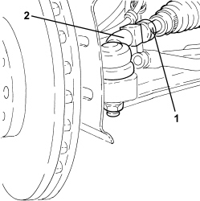

4450A10 FRONT WHEEL GEOMETRY - CHECK USING OPTICAL EQUIPMENT - INCLUDES ADJUSTMENT IF NECESSARY
- Path
- Procedures > 44 SUSPENSION AND WHEELS > 4450 HUBS AND WHEELS > 4450A WHEEL GEOMETRY > 4450A10 FRONT WHEEL GEOMETRY - CHECK USING OPTICAL EQUIPMENT - INCLUDES ADJUSTMENT IF NECESSARY
- Kind
- repair procedure (removal / refitting; the operation number is the code)
- Applies to
- all engines; all production periods
- Interactive page
- https://sloeber94.github.io/elrnDB-aBrrSpdr/en/#/946002220
Applies to: all engines; all production periods
- Check the front wheel geometry after conducting the following checks on the parts that affect wheel geometry.
- “Standard A” (vehicle unladen including spare wheel, tools, accessories and consumables, full tank of fuel);
- tyre inflation pressure.
Applies to: all engines; all production periods
GEOMETRY CHECK
- Check the front wheel geometry by ensuring that ground clearances A - B are within specified values.
Measurement | Value | Validity |
|---|---|---|
Front geometry A - B (mm) | 127 (Standard A) | 2.2 JTS |
Measurement | Value | Validity |
|---|---|---|
Front geometry A - B (mm) | 118 (Standard A) | 3.2 JTS |
Measurement | Value | Validity |
|---|---|---|
Front geometry A - B (mm) | - | 2.4 JTD 20V |

Applies to: all engines; all production periods
HALF TOE-IN CHECK
- Check that the front wheel half toe-in is within required limits.
Measurement | Value | Validity |
|---|---|---|
Front wheel semi toe in with 16" wheels (mm) | - 0.45 +/- 0.5 (Standard A) | 2.2 JTS 3.2 JTS 2.4 JTD 20V |
Measurement | Value | Validity |
|---|---|---|
Front wheel semi toe in with 17" wheels (mm) | - 0.50 +/- 0.5 (Standard A) | 2.2 JTS 3.2 JTS 2.4 JTD 20V |
Measurement | Value | Validity |
|---|---|---|
Front wheel semi toe in with 18" wheels (mm) | - 0.55 +/- 0.5 (Standard A) | 2.2 JTS 3.2 JTS 2.4 JTD 20V |
Measurement | Value | Validity |
|---|---|---|
Front wheel semi toe in (degrees) | - 0° 8’ +/- 4’ (Standard A) | 2.2 JTS 3.2 JTS 2.4 JTD 20V |
- If the front wheel half toe-in value is not within the recommended figures, adjust it following the instructions given below.
ADJUSTING TOE-IN
- Make sure that the steering wheel is completely straight and lock it in this position using a suitable tool.
1. Loosen the lock-nuts fastening the steering rods.
2. Tighten or loosen the steering links until the toe-in value is correct, keeping the front wheels aligned.
- Tighten the steering link lock-nuts to the recommended torque.
Component | Fastening | dia | Value (daNm) | Validity |
|---|---|---|---|---|
Power steering box side steering rod | Locknut | M20 | 11.7 ÷ 14.3 |
- Remove the tool used to lock the steering wheel.

Applies to: all engines; all production periods
CAMBER CHECK
- Check that the front wheel camber is within required limits.
Measurement | Value | Validity |
|---|---|---|
Front wheel camber (degrees) | - 0° 34’ +/- 18’ (Standard A) | 2.2 JTS 2.4 JTD 20V |
Measurement | Value | Validity |
|---|---|---|
Front wheel camber (degrees) | - 0° 26’ +/- 18’ (Standard A) | 3.2 JTS |
CASTER CHECK
- Check that the front wheel caster is within required limits.
Measurement | Value | Validity |
|---|---|---|
Caster (degrees) | 4° 15’ +/- 18’ (Standard A) | 2.2 JTS 3.2 JTS 2.4 JTD 20V |